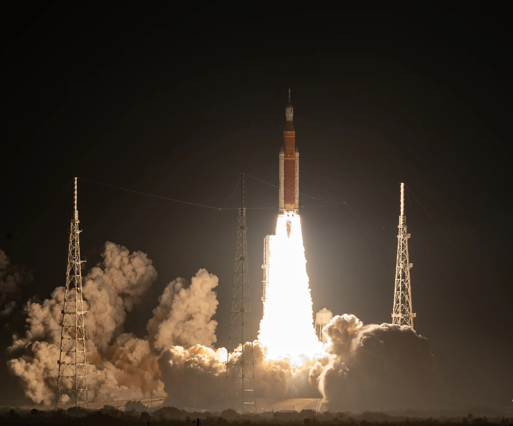
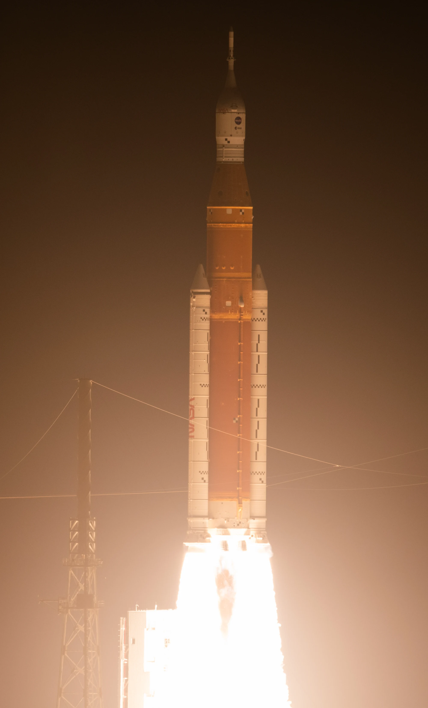
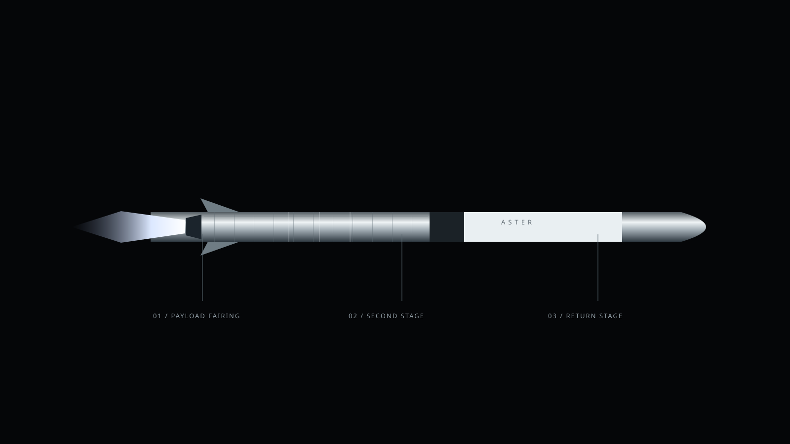

ÉTUDE 07 / A FICTIONAL MISSION
FOR A
WIDER VIEW.
NASA / Bill Ingalls · Artemis I 发射资料图，非 ASTER 型号实拍。
⌄
DESIGNING FOR RETURN
UPWARD.
AND BACK.
NASA / Joel Kowsky · 2022年 Artemis I 资料图；本页为原创航天设计研究。
⌄ASTER 02 / VEHICLE STUDY
BUILT AROUND
THE JOURNEY.
两级构型与可返回的一级组成一个关于重复使用的概念。载荷整流罩、级间连接和返回结构，在同一条轴线上各司其职。

STAGES02概念构型
PURPOSEEARTH地球观测载荷
DESIGN SERIES07固定研究案例
ONE PLANET. MORE PERSPECTIVE.
LOOK OUT.
LOOK AFTER.
许可地球环境参考影像 · 不是本页虚构任务的实际回传。